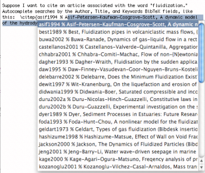

Autocompletion Autocompletion
Autocompletion AutocompletionThe input manager autocompletion plugin is not installed on Mac OS X 10.5 and greater. Please encourage TeX front end developers to include this functionality. Details and code are available by contacting the BibDesk developers.
BibDesk can install a plugin that lets you search your database and insert citation commands conveniently without leaving your text editing application. See section Autocompletion to install the plugin and manage the applications that use it.

Autocompletion ties into the regular dictionary autocompletion of words on Mac OS X 10.3 and greater. In Cocoa applications (such as TextEdit), you can type a cite key followed by a text fragment, such as `\cite{bib' and hit the F5 function key to get a list of possible autocompletion entries containing the text `bib'.
BibDesk's autocompletion provides possible matches based on the Title, Author, Citekey, and Keywords of your currently open BibTeX files. To select an item, hit tab, return, comma, or closing brace as appropriate.
If BibDesk is not running when you try to use the autocompletion feature, it will launch automatically, and the default bibliography will be searched. If you have not set a default bibliography in your preferences (See section General), you will need to open the desired file manually in order for this feature to work.
Note that on laptop keyboards, the "fn" key must
be used to get the actual F5 key behavior with the default keyboard
preferences. Alternatives are to use option-escape, which will also
trigger autocompletion, or to set up a key binding for the
complete: selector.
The autocompletion input manager will also provide completion for TeX \ref{ and \pageref{
commands, based on all \label commands in the same text file. For instance,
if you have a table labeled "\label{tab:myTable}", you can type "See Table~\ref{tab:m}",
hit the same key sequence used for citekey autocompletion, and see a list of all
matching entries pop up. The autocompletion looks for up to seven matching
characters, so the more you type, the fewer options you'll be presented with in the list.
There is a conflict with the TextExtras 1.7 input manager, so make sure you have the latest TextExtras installed.
By default, iTeXMac 1.3 does not support the keybinding for
autocompletion, but it can easily be made to work by adding a complete: keybinding to
~/Library/Application Support/iTeXMac/Key Bindings/TextKeyBinding.dict.
The following snippet binds control-u to autocompletion:
<key>^u</key>
<string>complete:</string>
For BBEdit users, Curt Clifton has written an AppleScript to provide similar functionality. It can be obtained from http://www.cs.iastate.edu/~cclifton/software.shtml.
For LyX users, Mark Reid has written an AppleScript to push BibDesk citations to LyX, and his script is available at http://www.threewordslong.com/projects/misc/bibdesktolyx/.
BibDesk also provides a Distributed Objects API for developers to search for publications. See the BibDesk Wiki for details and examples.